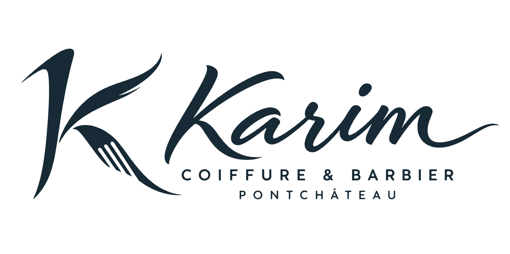
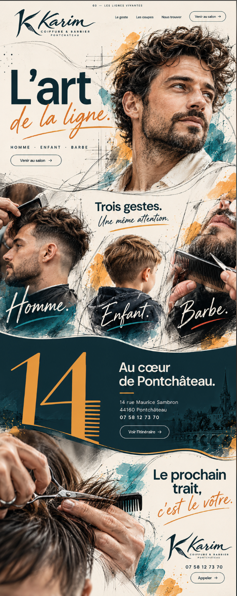
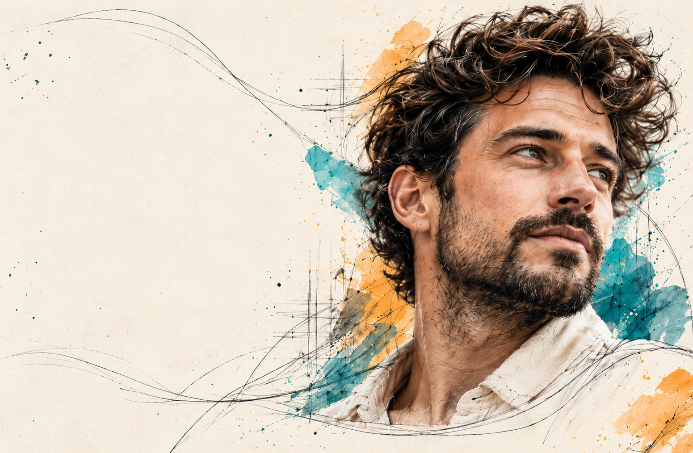
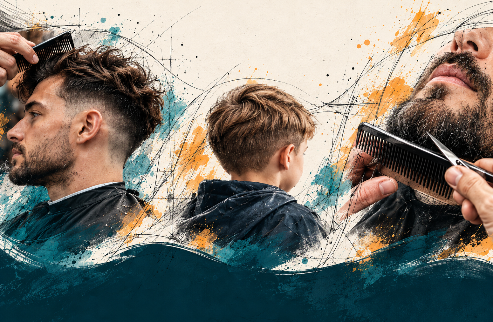
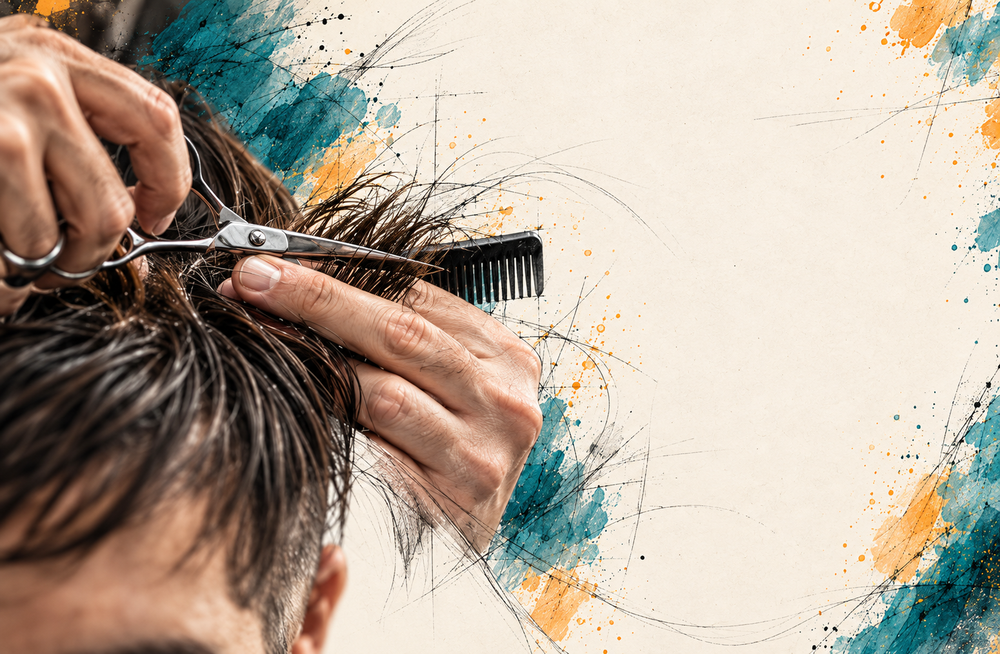
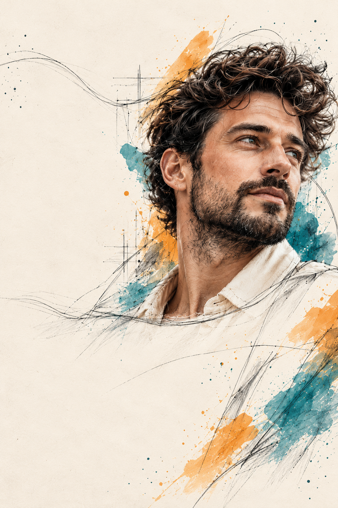
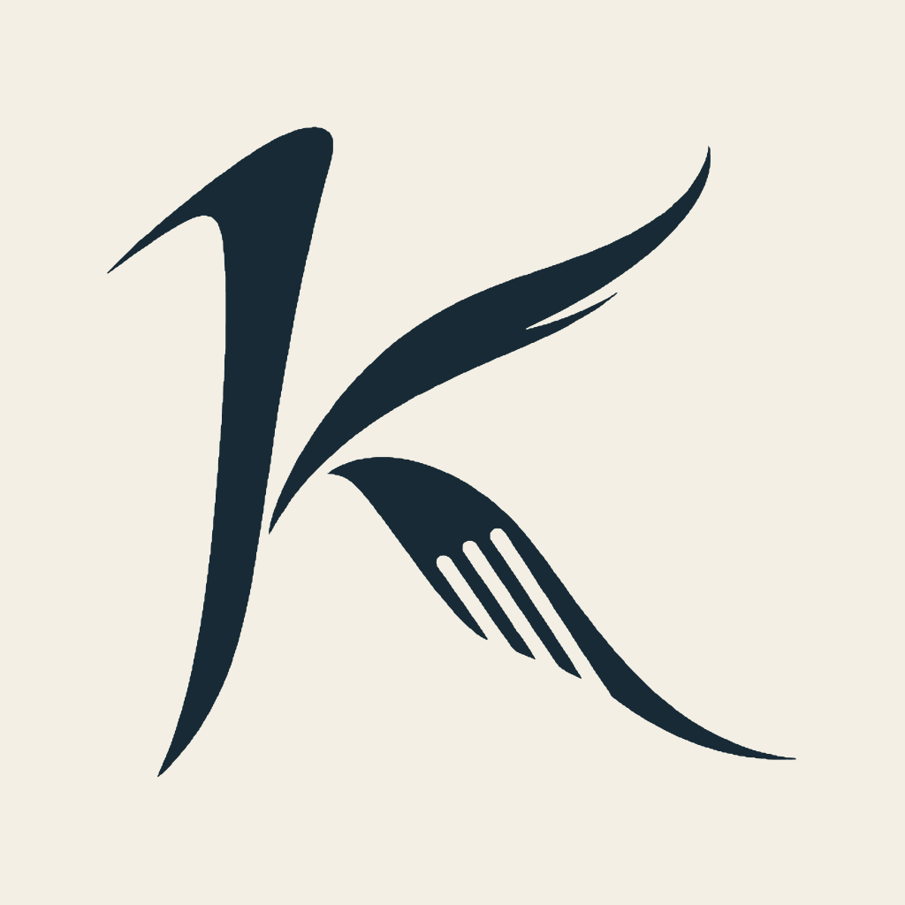
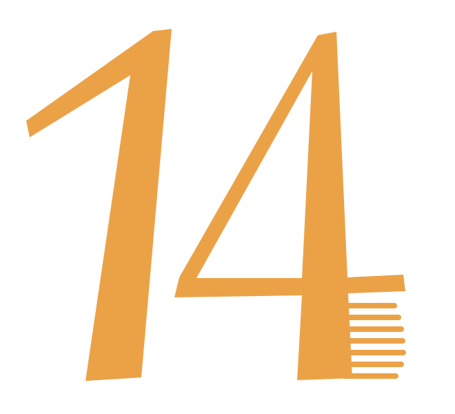

L’art de la ligne.
Guide de la marque, des images et de la structure choisie le 30 octobre 2026. Cette page documente le projet ; la référence ci-dessous est une étude visuelle approuvée, pas une capture du site implémenté.
La marque

Le K associe des traits de cheveux à trois ouvertures de peigne. Le mot Karim est un lettering original, converti en contours SVG natifs.
La typographie
Bricolage Grotesque
Au cœur de Pontchâteau.
Caveat · Une même attention.
DM Sans pour les informations, les liens et les textes. Poids locaux : 400, 500 et 600. Bricolage : 600 et 700. Caveat : 500 et 600. Les trois familles et leurs licences OFL sont incluses. Le lettering Karim et le dessin 14 ne sont pas des fontes de texte complètes.
La référence choisie

Fichier reçu lors de la sélection. Quatre scènes, avec Hero et sections du même modèle. Le fond uni principal se trouve dans la localisation. Le motif de ville est une illustration libre.
Les images de campagne
Images créées pour la campagne de marque. Elles ne documentent pas le propriétaire, l’équipe, des clients, des réalisations ou l’intérieur du salon.

Hero horizontal · texte et logo ajoutés en HTML/SVG.

Frise continue · Homme, Enfant et Barbe.

Scène finale · zone de lecture claire à droite.

Hero mobile · composition dédiée, pas une simple miniature de page.

K · avatar 1024 × 1024.

14 · numéro du salon interprété en signe graphique.
Le mouvement
- Le trait apparaît et la photographie passe du gris à la couleur par un masque diagonal.
- Les plans se déplacent légèrement en suivant la lecture ; aucune section ne capture le scroll.
- Chaque raccord possède un contour SVG spécifique.
- Pause, réduction du mouvement et économie de données affichent une composition statique complète.
Lire le scénario d’animation et la timeline. Aucun film ni séquence de frames n’a été créé.
Contact et vérification
14 rue Maurice Sambron, 44160 Pontchâteau · 07 58 12 73 70. Les sources sont conservées dans le dossier d’origine. Le site propose téléphone et itinéraire ; il ne simule pas de réservation en ligne.
Browser QA : UNVERIFIED. La prévisualisation est indisponible. Les vérifications réalisées concernent les fichiers et le code ; le rendu et les interactions restent à tester dans un navigateur réel avant publication. Le projet n’a pas été publié.